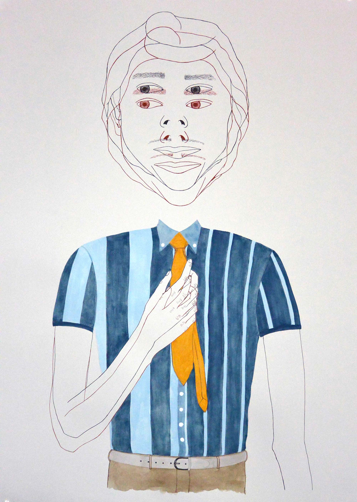
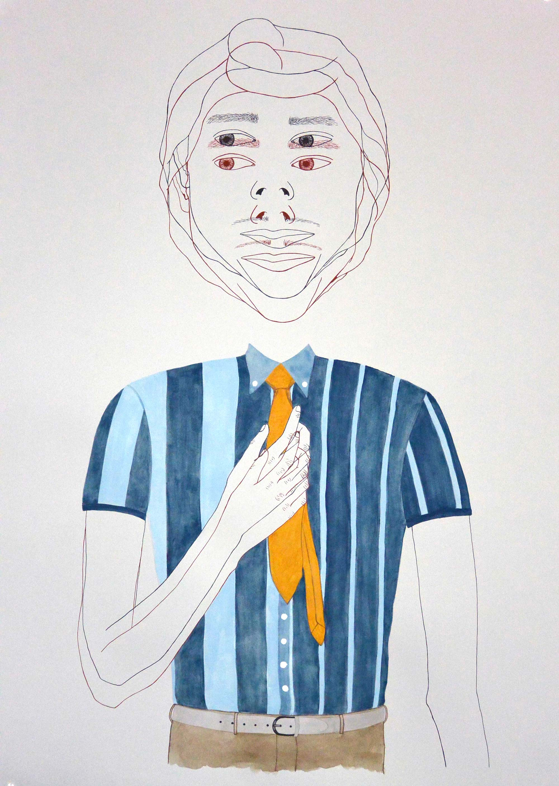

{kind=link}
{kind=link}
{kind=link}
{kind=link}
{kind=link}
ALTER EGOS SERIES
These 22x30 illustrations are a series of drawings, based on the theme of conflicting alter egos.
These are high quality illustrations using traditional calligraphy nibs, archival India inks, homemade walnut ink, and archival Stonehenge paper.

{kind=link}
SHELL MAN VOL.1
This 36x36 illustration is one of two in a series of drawings, based on a sculpture made of shells and plaster.
This is a high quality illustration using tradtional calligraphy nibs, archival India ink, and archival Stonehenge paper. This illustration has been fitted and mounted with a light tan mat in a custom made solid pine frame.
For purchasing information, please contact me by email.

SHELL MAN VOL.2
This 24x36 illustration is one of two in a series of drawings, based on a sculpture made of shells and plaster.
This is a high quality illustration using tradtional calligraphy nibs, archival India ink, all-natural watercolors, and archival Stonehenge paper.
For purchasing information, please contact me by email.